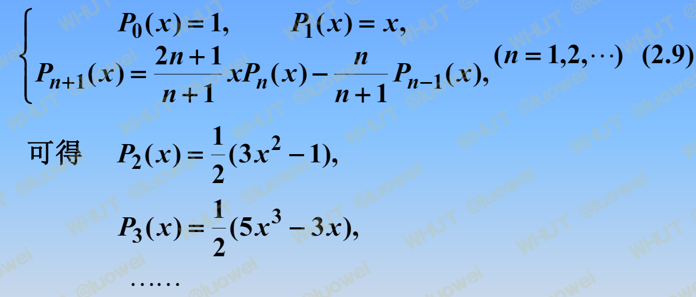

1.函数逼近的基本概念
函数逼近与函数空间
函数空间：
维度：
的维度为 ， 的维度为 ， 的维度为无穷， 的维度为 。
有限维空间 vs 无限维空间：如果一个空间的基是有限的（有有限个基向量），则称为有限维空间，否则称为无限维空间。
线性相关与无关
设集合S是数域P上的线性空间，元素，如果存在不全为0的数，使得 ,则称线性相关。否则只对才成立，则称线性无关。
函数逼近
对于函数类A中的函数 ，要求在另一类较简单的函数类中找到一个函数 ，使得 与 的误差在某种度量意义下最小。即：
范数
对中的向量，表示向量的p范数,有三种常用的范数：
1-范数：
2-范数：
-范数或最大范数：
类似的，对于中的函数，表示的范数，可定义三种常用的范数：
1-范数：
2-范数：
-范数：
向量内积/Gram矩阵
内积
的内积定义为：
加权内积：
内积空间
设为一个内积空间，为中的向量,矩阵G称为Gram矩阵，定义为：
G非奇异的充要条件是线性无关。
在内积空间上可以由内积导出一种范数，即对。
函数内积/权函数/Gram矩阵
设，为上的权函数，则可定义内积：
并导出范数：
设,则Gram矩阵为：
2.正交多项式
正交函数族与正交多项式
函数正交
若都是中的连续函数，为[a,b]上的权函数，且，则称在[a,b]上带权正交，记作。
正交函数族
设在[a,b]给定函数族,满足：
则称函数族为[a,b]上的正交函数族。特别的当时，称标准正交函数族。
正交多项式
若多项式序列满足带权的[a,b]上的正交性，则称为以为权函数[a,b]上的正交多项式序列，称为以为权函数的[a,b]上的n次正交多项式。 非重点，性质略。
常用正交多项式
这里仅记载一个常用的正交多项式求法：
- 勒让德多项式：

- 勒让德、切比雪夫、第二类切比雪夫、拉盖尔、埃尔米特正交多项式非重点略。
3.最佳一致逼近多项式
非重点略
4.最佳平方逼近
函数的最佳平方逼近
设上连续，在[a,b]上的次最佳平方逼近多项式满足：
设，在集合上的最佳平方逼近函数满足：
求解：
问题归结于求的系数，使得：
取得最小值，即极值处的导数为0：
即：
继而可得方程组即法方程：
平方误差：
例题：
用正交函数族求最佳平方逼近
设，,为正交函数族,则法方程：
可得：
例题：